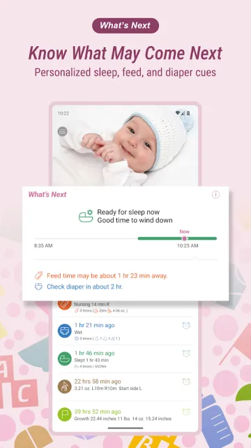
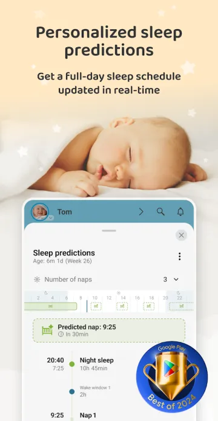
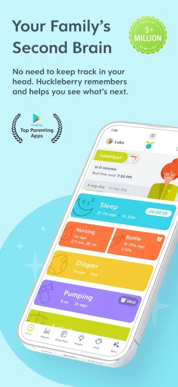
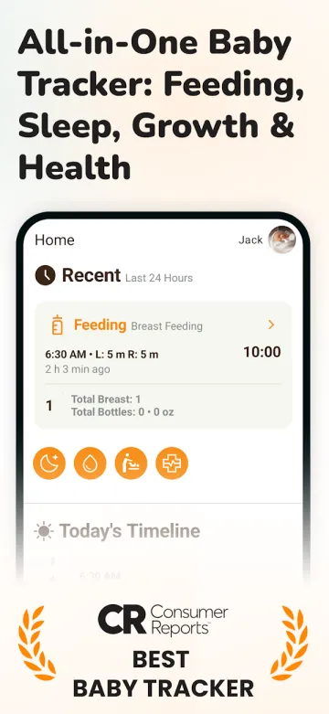
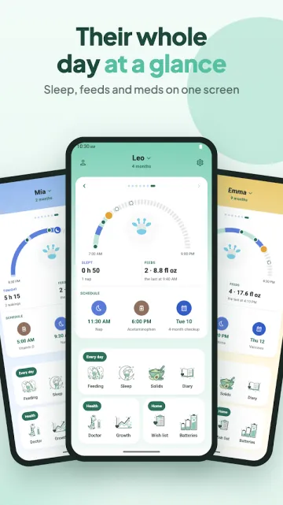

On this page · 10 sections
In short
For most Android parents who want a plain log of feeds, sleep and diapers, Baby Tracker (Nighp) and Baby Daybook are the most reviewed options, both free with ads and with a paid upgrade. If you are on iPhone only, or you want paid sleep coaching and nap predictions, Huckleberry is the stronger pick. Raffy, which we make, fits Android parents who want a free app with no ads and no premium tier, and who are fine with a newer, smaller app.
Disclosure: we make Raffy. To keep this fair, the apps are ordered by number of Google Play reviews, most first, so Raffy comes last. Every fact comes from the app's own Google Play listing, official website or App Store page, read on Nov 3, 2026 (Google Play ratings and downloads re-read on Nov 6, 2026). Where a page does not say something, such as app languages, we write "not stated" instead of guessing. Prices change, so check the store before you pay.
Quick comparison
| App | Price model | Platforms | App languages | Standout features |
|---|---|---|---|---|
| Baby Tracker (Nighp) | Free with ads; Plus subscription or one-time Remove Ads | Android, iOS | App Store: 14; Play: not stated | Feeding, sleep, diaper and pumping logs, charts, caregiver sync |
| Baby Daybook | Free with ads; Premium (monthly, yearly US$59.99, or lifetime on the US App Store) removes ads | Android (incl. Wear OS), iOS | App Store: 40; Play: not stated | Sleep predictions, family sync, health log, printable reports |
| Huckleberry | Freemium: free tier; Plus and Premium subscriptions | Android, iOS | App Store: English only; Play: not stated | SweetSpot nap predictions, custom sleep plans, Berry AI chat (paid) |
| Glow Baby | Free with ads; Premium $59.99 per year after a 7-day trial | Android, iOS | App Store: 4; Play: not stated | Feeding, sleep and diaper logs, milestones, articles and tips |
| Sprout Baby | Free to install; Premium subscription with free trial (price not stated) | Android, iOS | Not stated | Growth charts with premature adjustment, health log, trends |
| Raffy | Free: no premium tier, no ads, no in-app purchases | Android only | English, Spanish, French, Portuguese | No ads, works offline without an account, feeding widget, milk bank |
"Free with ads" is what the Google Play listing shows ("Contains ads"). For Baby Tracker, Baby Daybook and Glow, the App Store language counts come from their iOS listings; their Google Play pages do not state languages.
1. Baby Tracker - Newborn Log (Nighp)
A long-running logger for feeds, sleep, diapers, pumping and growth, made by Nighp Software. It is the most reviewed app in this list.

- Fits: Parents who want a straightforward log with charts and caregiver sync, and who do not mind ads in the free version.
- Not ideal if: People who want an ad-free app without paying, or who want expert-designed sleep plans.
- Price: Free with ads. An optional "Baby Tracker Plus" subscription removes ads and adds "What's Next" timing cues, and there is a one-time "Remove Ads" purchase. Google Play says core tracking stays free. The US App Store listing shows Remove Ads at $4.99, Plus at $5.99 per month or $49.99 per year.
- Platforms: Android and iOS (iPhone, iPad).
- App languages: The App Store lists English plus 13 more, including Spanish, French and Portuguese. The Google Play listing does not state languages.
- Key features: Breastfeeding timer, bottle and pumping logs, sleep timer with reminders, diaper log, growth tracking with WHO charts, medication and vaccine notes, daily to monthly charts, sync across devices and caregivers.
- Google Play: 4.9 stars from 72.1K reviews, 1M+ downloads (Google Play, checked Nov 6, 2026)
2. Baby Daybook - Newborn Tracker
An all-round tracker with a sleep-prediction feature, widgets and a Wear OS app. The Google Play listing credits the developer as Baltapis.

- Fits: Parents who want sleep predictions, a visual timeline and family sync in one app, on Android or iPhone.
- Not ideal if: People who want no ads without a subscription.
- Price: Free with ads. A Premium subscription removes ads, works across Android and iOS devices and extends Premium to caregivers on shared baby profiles. The US App Store lists Premium Monthly, Yearly (US$59.99) and Lifetime options, with more than one price shown for some of them. We did not find a single public plan price on a Google Play or official-site page.
- Platforms: Android (including Wear OS) and iOS.
- App languages: The App Store lists English plus 39 more, including Spanish, French and Portuguese. The Google Play listing does not state languages.
- Key features: Sleep predictions with a visual timeline, feeding, pumping and solids logs, diaper and potty log, growth against CDC and WHO charts, health log (symptoms, medicines, doctor visits, vaccines), real-time family sync, printable reports, widgets.
- Google Play: 4.7 stars from 69.3K reviews, 1M+ downloads (Google Play, checked Nov 6, 2026)
3. Huckleberry: Baby Tracker
A baby tracker built around sleep. Its free tier logs sleep, feeds, diapers and growth; paid plans add SweetSpot nap predictions, schedules and personalized sleep plans.

- Fits: Parents who want sleep guidance, nap predictions or a structured sleep plan, and are willing to pay for it. It also fits households on iPhone.
- Not ideal if: People who want predictions without a subscription, or who need the app in another language, because its App Store listing says English only.
- Price: Freemium. Its pricing page shows Free ($0), Plus at $5.74 per month billed yearly and Premium at $9.99 per month billed yearly (the page shows only a "$" sign, no currency code). Plus adds SweetSpot predictions, Schedule Creator, Insights, Enhanced Reports and AI logging. Premium adds the Berry AI chat and Custom Sleep Plans. In-app prices on the US App Store differ from the pricing page, so check the price shown in the app before you subscribe.
- Platforms: Android and iOS.
- App languages: App Store: English only. Google Play: not stated.
- Key features: One-touch logs for sleep, feeds, diapers and growth, breastfeeding timer, solids and allergen tracker, multiple children, caregiver sync, and paid sleep predictions and plans.
- Google Play: 4.9 stars from 37.3K reviews, 1M+ downloads (Google Play, checked Nov 6, 2026)
4. Baby Tracker App | Glow
The baby tracker from Glow Inc, part of a family of Glow health apps. The Play listing describes it as AI-powered and also includes articles and tips.
- Fits: Parents who like tips and articles next to their logs, and who are fine with ads in the free version.
- Not ideal if: People who want an ad-free free app, or a simple tracker without a content layer.
- Price: Free with ads. Glow Premium is one membership for all four Glow apps: a 7-day free trial, then $59.99 per year (the page shows only a "$" sign). Premium includes an ad-free experience.
- Platforms: Android and iOS.
- App languages: The App Store lists English, French and Chinese (simplified and traditional). The Google Play listing does not state languages.
- Key features: Diaper log, breastfeeding and pumping, feeding log, sleep tracker, milestones, growth records, newborn-care articles.
- Google Play: 3.9 stars from 14.7K reviews, 1M+ downloads (Google Play, checked Nov 6, 2026)
5. Baby Tracker by Sprout
A tracker from Sprout Apps with feeding, sleep, diaper, growth and health logs. It is a much smaller app than the others on Google Play.

- Fits: Parents who want growth tracking on WHO and CDC charts, including adjustment for premature babies, plus a health log for visits and vaccines.
- Not ideal if: People who want a large user base and a long review history: it has 209 reviews on Google Play.
- Price: Free to install with in-app purchases. Premium has a free trial and renews automatically; no price is stated on the listing.
- Platforms: Android and iOS.
- App languages: Not stated.
- Key features: Breastfeeding timer, bottle and solids logs, sleep log with reminders, diapers, growth on WHO and CDC charts, milestones, health log with visits and vaccines, trend charts, sync with caregivers.
- Google Play: 4.1 stars from 209 reviews, 10K+ downloads (Google Play, checked Nov 6, 2026)
6. Raffy: Baby Tracker & Feeding
The app we make. A calm tracker for feeds, sleep and growth that works offline and needs no account.
- Fits: Android parents who want a free app with no ads, growth on WHO charts, a home-screen feeding widget, and an interface in English, Spanish, French or Portuguese.
- Not ideal if: Anyone on iPhone, because there is no iOS app. Also anyone who wants sleep predictions or sleep coaching: the listing describes sleep logs and reminders, not predictions. It also has no diaper log, no data export and no way to invite a second caregiver. It is the newest and smallest app here.
- Price: Free: no premium tier, no ads, no in-app purchases.
- Platforms: Android only (no iPhone app).
- App languages: English, Spanish, French and Portuguese.
- Key features: Bottle feeds in ml or fl oz and a left/right breastfeeding timer, sleep log with nap and bedtime reminders, weight, length and head circumference on WHO charts with percentile curves, solids planner and tried-foods list, appointments, temperature and medicine log, photo diary, breast-milk bank, several children, optional sign-in to back up and sync.
- Google Play: no star rating shown yet, 50+ downloads (Google Play, checked Nov 6, 2026)
Try Raffy, free and ad-free
Feeds, sleep and growth on WHO charts in one Android app. No premium tier, no ads.

Which one should you pick?
- You are on iPhone, or your partner is: Raffy is not available on iOS. Pick Huckleberry, Baby Daybook or Baby Tracker, all of which list an iOS app and caregiver sync.
- You want sleep coaching or nap predictions: a paid app wins here. Huckleberry's Plus and Premium plans add SweetSpot predictions and personalized sleep plans. Baby Daybook also advertises sleep predictions.
- You want free and ad-free: Raffy is free with no ads and no purchases. The others in this list either show ads in the free version or sell a premium plan.
- You want your app in Spanish, French or Portuguese: Raffy is built in all three plus English. Baby Tracker and Baby Daybook list them on the App Store.
- You want the biggest user base: Baby Tracker (Nighp) and Baby Daybook have the most reviews on Google Play.
Not sure you need an app yet? Our free wake window planner and diaper output tracker work in your browser, and the Android baby tracker guide explains when a web tool is enough and when daily logging is worth it. If you are leaving Huckleberry specifically, read our Huckleberry alternatives on Android.
Pediatric safety
- A tracker records what you tell it. It cannot diagnose anything, and a sleep or feeding "prediction" is a pattern guide, not a rule.
- If your baby is hard to wake, refuses feeds, has very few wet diapers or seems unwell, call your pediatrician, whatever the app shows.
Frequently asked questions
What is the best free baby tracker app for Android?
It depends on what free means to you. Raffy is fully free with no ads, no premium tier and no in-app purchases, but it is Android only and newer. Baby Tracker (Nighp) and Baby Daybook are free to start but show ads, and Huckleberry has a free tier with paid plans for predictions and sleep plans.
Is there a baby tracker for Android with no ads?
Raffy has no ads. On Google Play, Baby Tracker (Nighp), Baby Daybook and Glow are labeled "Contains ads", and each sells a way to remove them. Huckleberry and Sprout are not labeled with ads on Google Play but have paid memberships.
Which baby tracker apps have sleep predictions?
Huckleberry offers SweetSpot nap predictions on its paid plans, and Baby Daybook advertises sleep predictions. Baby Tracker (Nighp) offers optional "What's Next" timing cues. Raffy logs sleep and sends nap and bedtime reminders, but its listing does not describe predictions.
Is Raffy available on iPhone?
No. Raffy is Android only. If you use an iPhone, Huckleberry, Baby Daybook and Baby Tracker all list iOS apps.
Can a baby tracker app replace the pediatrician?
No. These apps log what you enter and can show patterns, but they do not diagnose. Talk to your pediatrician about any concern.
Sources
- Google PlayBaby Tracker - Newborn Log listing (checked Nov 6, 2026)
- Nighp SoftwareBaby Tracker website (checked Nov 3, 2026)
- Apple App StoreBaby Tracker - Newborn Log listing (US) (checked Nov 3, 2026)
- Google PlayBaby Daybook - Newborn Tracker listing (checked Nov 6, 2026)
- Baby DaybookOfficial website (checked Nov 3, 2026)
- Apple App StoreBaby Daybook - Newborn Tracker listing (US) (checked Nov 3, 2026)
- Google PlayHuckleberry: Baby Tracker listing (checked Nov 6, 2026)
- HuckleberryOfficial website (checked Nov 3, 2026)
- HuckleberryPricing page (checked Nov 3, 2026)
- Apple App StoreHuckleberry listing (US) (checked Nov 3, 2026)
- Google PlayBaby Tracker App | Glow listing (checked Nov 6, 2026)
- GlowGlow Baby and Glow Premium page (checked Nov 3, 2026)
- Apple App StoreGlow Baby Tracker listing (US) (checked Nov 3, 2026)
- Google PlayBaby Tracker by Sprout listing (checked Nov 6, 2026)
- Sprout AppsOfficial website (checked Nov 3, 2026)
- Google PlayRaffy: Baby Tracker & Feeding listing (checked Nov 6, 2026)
Last checked: Nov 6, 2026 for Google Play ratings, downloads and screenshots; Nov 3, 2026 for prices, platforms, languages and features. Each fact above was read on these pages on that date and can change. This is an educational comparison, not medical advice. Editorial policy